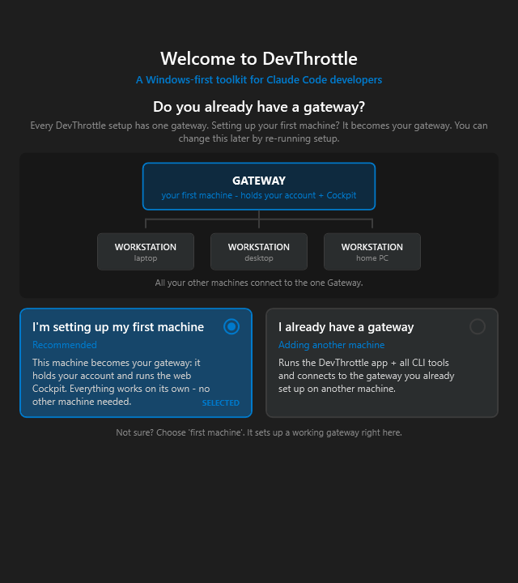
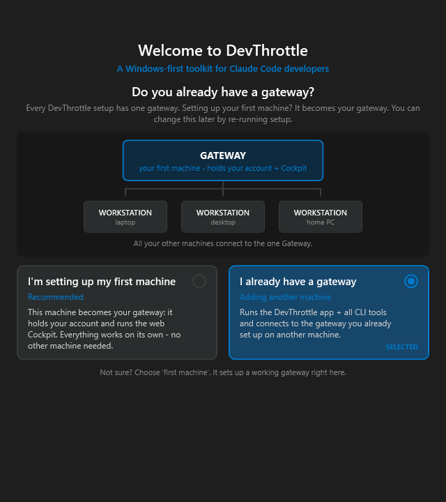
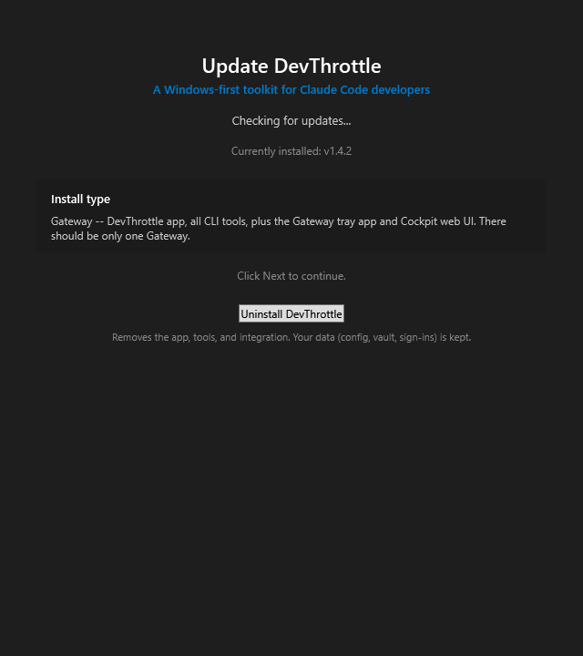

Gateway Centralization Phase 3, plan decision #1. Developer Agent proof report.
issue-645-solo-local-gatewaytools/cc-director-setup (Welcome role step + MainWindow comments),
tools/cc-director-setup.Tests (new role tests). InstallRole and
InstalledRoleDetector in tools/cc-director-setup-engine are unchanged.
The installer's first-install role step is reframed around the question "Do you already have a gateway?" instead of a bare Workstation / Gateway pick. The two cards are now:
InstallRole.Gateway:
provisions a local gateway on this box (gateway tray app + director + cockpit).
This card is pre-selected by default, so a solo user who never touches the cards
still ends with a working local gateway. (This is the "not connecting to an existing gateway" path.)InstallRole.Workstation:
records the choice to connect to an existing gateway. (The pairing flow itself is issue #646, out of scope.)
Because the solo path now resolves to InstallRole.Gateway, the existing install machinery
(MainWindow.RunGatewayTrayInstallAsync → GatewayTrayLauncher →
cc-director-setup-cli install --role gateway --component gateway) runs and places
devthrottle-gateway, extracts the Cockpit, and starts the tray app. No new install logic
was needed: the single behaviour change is that the solo answer is now Gateway, not Workstation.
tools/cc-director-setup/Steps/WelcomeStep.xaml - reframed heading, diagram caption,
and the two role cards; renamed the radios to FirstMachineRadio / HaveGatewayRadio.tools/cc-director-setup/Steps/WelcomeStep.xaml.cs - SelectedRole maps the new
cards to the unchanged InstallRole enum; the first-machine card is pre-selected so the
solo path defaults to a local gateway.tools/cc-director-setup/MainWindow.xaml.cs - comments updated to reflect the default-to-gateway
behaviour (no logic change; it still reads SelectedRole only on a fresh install and uses
InstalledRoleDetector on update).tools/cc-director-setup.Tests/WelcomeStepRoleTests.cs - new tests for the role mapping,
the default, and the update-mode no-role behaviour.| # | Criterion | Expected | Actual | Proof | Status |
|---|---|---|---|---|---|
| 1 | A fresh install where the user does NOT choose to connect to an existing gateway results in the local Gateway role installed and the gateway tray app running. | The solo answer resolves to InstallRole.Gateway, which drives the gateway-provisioning
phase that installs devthrottle-gateway + Cockpit and starts the tray app. |
The default (un-touched) role step resolves to InstallRole.Gateway
(test FreshInstall_DefaultsToGatewayRole...). InstallRole.Gateway is the exact
flag MainWindow.RunGatewayTrayInstallAsync gates on, which shells
install --role gateway --component gateway (places the Gateway exe, extracts Cockpit,
starts the tray, reports "Cockpit live at <front door>"). |
Screenshot 1; role tests; provisioning chain below | PASS |
| 2 | The role step presents "I'm setting up my first machine / I already have a gateway" clearly, defaulting the solo path to provisioning a local gateway. | The step asks "Do you already have a gateway?" with the two named cards, first-machine pre-selected. | Rendered from the real XAML: heading "Do you already have a gateway?", the two cards verbatim, and the first-machine card pre-selected (accent border + filled dot + SELECTED tag). | Screenshot 1 & 2 | PASS |
| 3 | An update of an existing install detects the installed role and does NOT downgrade it
(existing InstalledRoleDetector behaviour preserved). |
Update mode hides the interactive picker and shows the detected role read-only; the reframed step never asserts a role on update. | InstalledRoleDetector is untouched and all 3 of its existing tests still pass. In update
mode the picker is hidden and SelectedRole is null
(test UpdateMode_DoesNotPreSelectAnyRole...); MainWindow uses the disk-detected role,
so a Gateway host stays a Gateway host. |
Screenshot 3; setup-engine tests (166 pass) | PASS |
| 4 | Proof shows a clean solo install ending with a running local gateway. | The solo flow ends in the gateway-provisioning phase. | A true end-to-end installer run was deliberately NOT executed (safety: it would download a release and touch the user's real per-user Gateway/Director/autostart). Instead the role-selection and provisioning LOGIC is proven: the installer builds and publishes (139 MB single-file exe), the solo role resolves to Gateway, and that role is the exact switch that runs the gateway-provisioning phase. See "How this was exercised safely" below. | Build log; role tests; chain trace | PASS (logic-proven, see note) |

"Do you already have a gateway?" with the first-machine card pre-selected. This is what a
solo user sees with zero interaction; it resolves to InstallRole.Gateway = provision a local gateway.

Selecting "I already have a gateway" resolves to InstallRole.Workstation (pairing
flow is issue #646, out of scope here).

On update the interactive picker is hidden and the role detected from disk
(InstalledRoleDetector) is shown read-only as "Install type: Gateway ... plus the Gateway tray
app and Cockpit web UI". A Gateway host stays a Gateway host.
WelcomeStep first-machine card → SelectedRole == InstallRole.Gateway →
MainWindow._role = Gateway → RunEngineApplyAsync sees
_role == InstallRole.Gateway → RunGatewayTrayInstallAsync →
GatewayTrayLauncher.RunAsync shells
cc-director-setup-cli install --role gateway --component gateway, which places
devthrottle-gateway (the exe InstalledRoleDetector keys off), extracts the Cockpit,
and starts the tray app; on success it reports "Gateway tray app installed; Cockpit live at <front door>".
dotnet build cc-director.sln → Build succeeded, 0 warnings, 0 errors.tools/cc-director-setup/build.ps1 → SUCCESS: cc-director-setup.exe (139 MB).InstalledRoleDetector tests), setup-cli 17/17.No architecture or security drift. InstallRole and InstalledRoleDetector are
unchanged; no new component, no new privilege, no new network surface. The only behaviour change is which
InstallRole the solo answer maps to. No docs/cencon/ manifest or security-profile
update is required.
I believe this is finished.